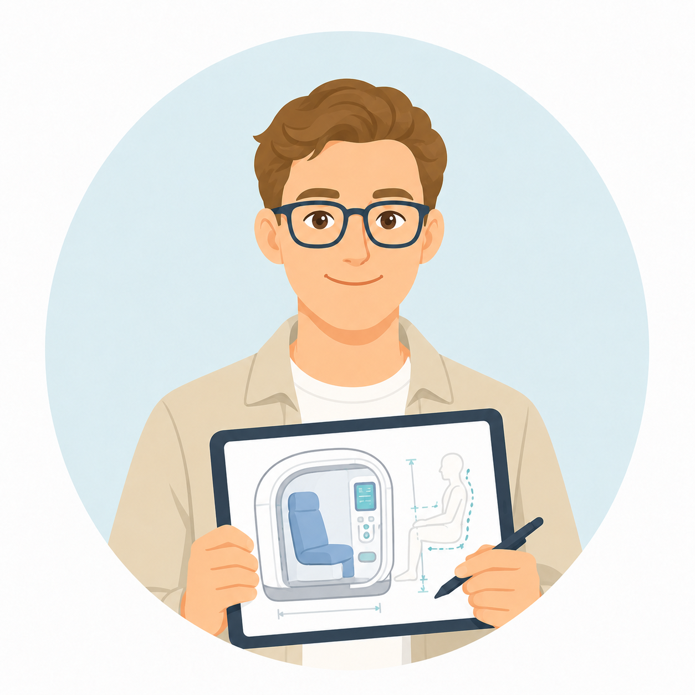
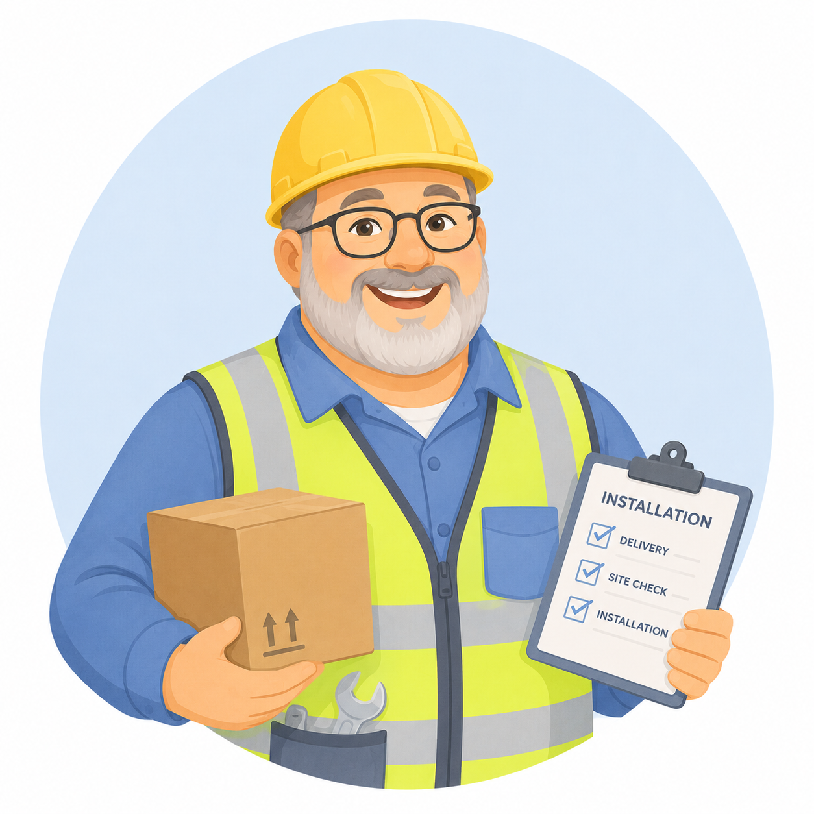
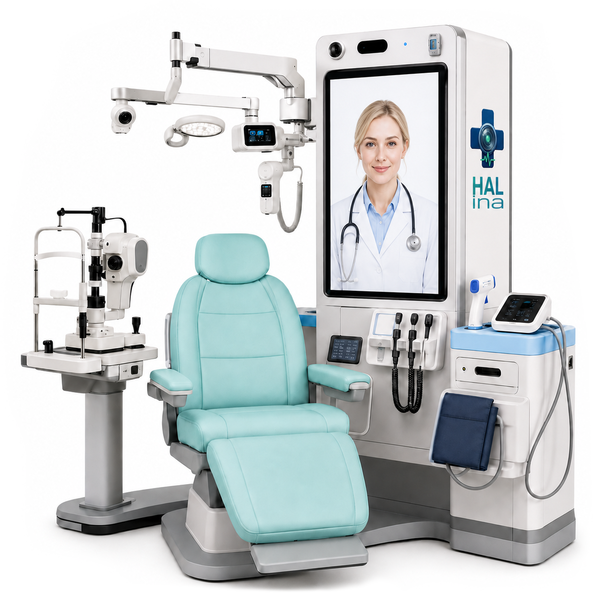

Michał
Kim jesteśmy?
Daria
Analityk biznesowo-medyczny
Paweł
Architekt systemu IT

Projektant kapsuły i ergonomii
Database Engineer
Security Engineer
Lekarz ekspert dziedzinowy
Prawnik
Helpdesk i monitoring 24/7

Logistyka i montaż terenowy
Technik aparatury i kapsuły
Świat przed e-przychodniami
Świat z e-przychodniami
Jak to działa
biometria
identyfikacja pacjenta na podstawie danych biometrycznych
kamery i urządzenia audio
komunikacja lekarza AI z pacjentem
analiza zachowań i emocji pacjenta
diagnostyka podstawowa
waga z analizatorem składu ciała i wzrostomierzem
ciśnieniomierz, czujnik tętna, pulsoksymetr, termometr
diagnostyka obrazowo-akustyczna
aparat USG, aparat okulistyczny, kamera dermatologiczna
badanie dna oka, badanie refrakcji
analiza wizualna objawów, analiza skóry, analiza oddechu i kaszlu
diagnostyka laboratoryjna
analizator krwi, glukometr, analizator biomarkerów
automatyczny system poboru krwi
badanie podstawowych parametrów krwi
pomiar glukozy, CRP, infekcje
diagnostyka układu sercowo-naczyniowego
stetoskop, spirometr, EKG
analiza pracy serca oraz badanie wydolności oddechowej
testomat
aparatura do szybkich testów diagnostycznych
analiza wybranych wydzielin organizmu
wykrywanie zaburzeń metabolicznych
wykrywanie infekcji (testy wirusowe)
próbkomat
automat do dystrybucji próbek z materiałem
przyjmowanie próbek (krew, mocz, ślina)
przechowywanie w odpowiednich warunkach
przygotowanie do transportu do badań laboratoryjnych
lekomat
automat do dystrybucji leków
wydawanie leków na podstawie e-recepty
realizacja e-recept na miejscu

Lekarz AI Heal9000
cierpliwy i empatyczny agent AI
wywiad z pacjentem
gromadzenie informacji i profilowanie pacjenta - model AI uczy się pacjenta
personalizacja leczenia na podstawie historii pacjenta
pełna autonomia
autonomiczny dobór badań i testów
autonomiczna interpretacja wyników badań
autonomiczne generowanie dokumentacji medycznej
decyzje medyczne
postawienie diagnozy - w oparciu o bazę tysięcy podobnych przypadków medycznych
decydowanie o dalszym leczeniu - skierowanie na dalsze badania lub skierowanie do lekarza specjalisty
przepisanie leków i przedłużenie e-recepty
sterowanie aparaturą medyczną
instruowanie pacjenta jak przeprowadzić samobadanie
intuicyjna obsługa urządzeń
weryfikacja poprawności wykonanego badania
pobieranie danych z urządzeń - analiza objawów
Dlaczego właśnie my?
Tworzymy nową kategorię usług medycznych
01
Luka rynkowa
HALina to produkt unikatowy. Na rynku brakuje kompleksowego rozwiązania, które łączy stanowisko diagnostyczne, lekarza AI, automatyczną dokumentację i aplikację pacjenta w jeden spójny system.
02
Gotowy prototyp
HALina nie jest tylko koncepcją. To działający model produktu, który można pokazać, testować i rozwijać w kierunku wdrożeń pilotażowych.
03
Certyfikacja i zaufanie
E-przychodnia to zarejestrowany, spełniający wszelkie normy, certyfikowany wyrób medyczny. Projekt spełnia wymagania bezpieczeństwa, ochrony danych i standardów medycznych, które są kluczowe dla wejścia na rynek ochrony zdrowia.
04
Skalowalny model
Tworzysz całą sieć punktów, zależnie od zapotrzebowania na usługi medyczne w danej lokalizacji. Nie ogranicza cię już niedobór personelu medycznego.
05
Szansa na rynek
Wczesne wejście w nową kategorię usług daje możliwość zbudowania rozpoznawalnej marki, standardu działania i silnej pozycji rynkowej przed konkurencją.
Na jakim jesteśmy etapie
Koszty planowane
Rezerwy
Koszty zrealizowane
1. Planowanie
- 1.1 Analiza
- 1.2 Wymagania systemowe
- 1.3 Definicja zakresu projektu
2. Projektowanie
- 2.1 Architektura systemu IT
- 2.2 Projekt UI/UX systemu
- 2.3 Projekt modułu AI
- 2.4 Projekt punktu diagnostycznego
3. Implementacja
- 3.1 Implementacja systemu IT
- 3.2 Implementacja modułu AI
- 3.3 Implementacja aplikacji mobilnej
- 3.4 Implementacja systemu fizycznego
4. Integracja
- 4.1 Integracja systemu IT
- 4.2 Integracja modułu AI
- 4.3 Integracja aparatury medycznej
- 4.4 Integracja aplikacji mobilnej
5. Testy
- 5.1 Testy systemu IT
- 5.2 Testy modułu AI
- 5.3 Testy aplikacji mobilnej
- 5.4 Testy systemu fizycznego
- 5.5 Testy integracyjne
- 5.6 Testy akceptacyjne
- 5.7 Testy medyczne
6. Wdrożenie
- 6.1 Przygotowanie środowiska wdrożeniowego
- 6.2 Instalacja systemu w punkcie diagnostycznym
- 6.3 Konfiguracja systemu produkcyjnego
- 6.4 Szkolenie użytkowników i personelu
- 6.5 Uruchomienie produkcyjne systemu
- 6.6 Dokumentacja powdrożeniowa
- 6.7 Promocja
7. Zarządzanie
- 7.1 Planowanie i kontrola projektu
- 7.2 Monitorowanie i raportowanie postępu
- 7.3 Zarządzanie ryzykiem projektu
- 7.4 Zarządzanie jakością projektu
- 7.5 Zamknięcie projektu
Radar ryzyk
Nasze działania
Dziękujemy
Pozostajemy do Państwa dyspozycji.